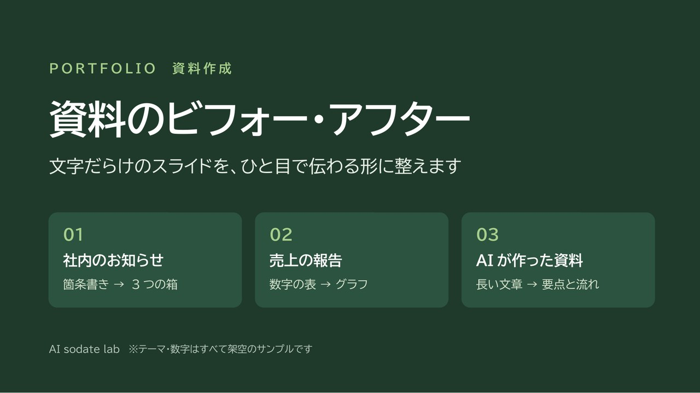

← 制作実績一覧へ戻る
見本 全7枚
資料のビフォー・アフター
文字だらけのスライドを、ひと目で伝わる形に整えます。社内のお知らせ、売上の報告、AIが作った資料の3つを例に、整える前と後を並べました。

作ったもの
「文字が多くて読まれない」「何を言いたい資料か分からない」といったスライドを、読む人がすぐ動ける形に整えた見本です。テーマや数字はすべて架空のサンプルです。
スライドを1枚ずつ見る
1 社内のお知らせ：箇条書き → 3つの箱
工夫した点 12行の箇条書きを「いつ・何が変わる・やること」の3つの箱に分け、読む人が動く順に並べました。
2 売上の報告：数字の表 → グラフ
工夫した点 細かい表から「何が言いたいか」を見出しにして、主役の店だけ色を付けて目が行くようにしました。
3 AIが作った資料：長い文章 → 要点と流れ
工夫した点 AIの長文から要点を3つに絞り、使い方は流れの図にして、ひと目で伝わる形にしました。
整えるときの3つのコツ
- 読む人が動く順に並べる
- 言いたいことを見出しにする
- 要点を3つに絞る
注意
テーマ・数字はすべて架空のサンプルです。実在の会社・サービスとは関係ありません。